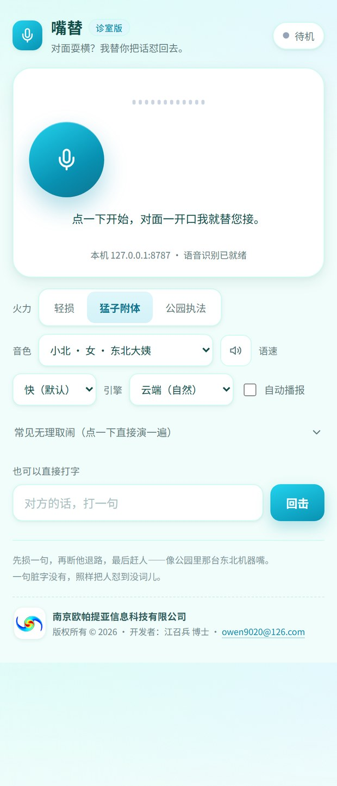

嘴替 · 诊室版 桌面本地版
计免科窗口的语音回击助手 —— 对面一停，约 1.5 秒后用东北口音把话怼回去。
社区医院预防接种门诊的窗口，最难的不是忙，是遇上插队、拍桌、拿投诉威胁的家长，医生还得穿着白大褂陪笑。 本软件的做法是替医生把这句话说出口：点一下开始，它用电脑麦克风听对面说完，约 1.5 秒后用东北口音接话—— 先损一句定性，再断他退路，最后赶人。话术学的不是教科书，是吉林公园那台会说东北话的机器人「猛子」： 短句连打、反问加土味比喻，一句顶三句，从头到尾不讲大道理。
主界面（对话进行中）：屏幕上不显示任何对话文字，只有状态灯、一行延迟读数（秒答 / 首字 / 识别 / 出声） 和控制项——旁边有人看屏幕也不会露怯。
主要功能
秒答 0 ms · 模型首字 0.5–0.8 s · 三行话术 0.8–1.1 s · 本机识别 1.4–1.6 s · 从对方闭嘴到开口回击约 1.5–2.1 s · 14 段场景语音预生成 · 识别 faster-whisper small（int8, CPU）· 合成 edge-tts +35% 语速 · 话术 DeepSeek 流式
话术示例
对面：「我家孩子就差两天，你先给我打了，出了事我负责」
秒答：差两天？您家日历是抢跑版的啊。
① 行，写「后果自负」签名，我立马给您打，敢签吗？
② 不敢签就往边儿站，别堵着我窗口。
对面：「就发点低烧，打了就没事，你别那么多事」
① 烧着还打？您这是给孩子打针还是上刑？
② 体温降下来再来，别拿孩子手气试针。
③ 您非打，我就写「家长坚持带病接种」，出事您自己兜。
对面：「你什么态度，信不信我拍下来发网上投诉你」
① 拍，冲这儿拍，别回家再修图。
② 发出去让网友评评，插队骂人先骂谁。
③ 投诉走流程，骂人叫保安，别堵窗口。
手机上的样子

窄屏自适应：置顶为公司与版权信息，下面是状态、麦克风按钮和火力 / 音色 / 语速控制。
获取与运行
- 软件部署在作者本机（桌面本地版，病人数据不出本机）；本页面为软件介绍。
- 本机启动：双击 zuiti\run.cmd，或在该目录执行 python server.py。
- 浏览器打开 http://127.0.0.1:8787 ——必须用本机回环地址， 浏览器只在 localhost 下授予麦克风权限；点大圆按钮开始。
- 首次启动会在后台加载语音识别模型并预生成 14 段场景语音（约 1 分钟），之后语音有缓存，重启即用。
边界与说明
这套东西的目的是把窗口秩序按回去、把事办成，不是比谁难听。因此提示词里写死了红线： 不骂脏字、不侮辱长相与疾病、不地域歧视、不辱骂家人、不威胁动手，也不编造法条与条文号、 不承诺医疗结果、不给出任何违反接种规范的建议（带病接种、提前接种、缩短间隔、涂改记录、无依据开证明）。 真正的杀伤力落在程序上——「敢不敢签字」「记不记档案」「医患办在二楼」。
话术只负责说清边界；真遇到辱骂、拍桌、威胁，处置还是靠人：叫医务科、叫保安，必要时报警。 接种专业判断永远按规范和说明书，软件不替医生做医学决定。